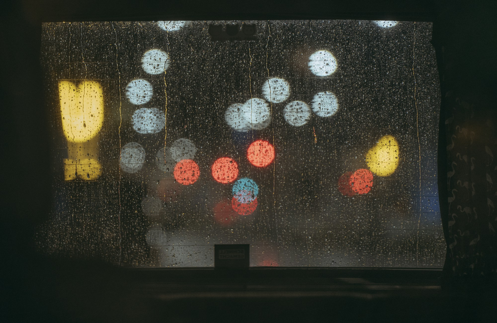

再往前一些。
话暂时到这里。
留在上一句
几个没有说完的意思。
《话到这里》
文后
那些没有说出的部分
把几段谈话重新放在一起，回看一个人如何欣赏、试探，又如何在一个已经听懂的说法里，停留得久一些。
心路与关键词
素材、转述与封面
文章沿用《再往前一些》的第一人称视角，以既有叙述、可核读的聊天文字与前稿为素材，重写为散文。相识、南京见面意向、后悔与推算、可能止步于朋友等情节，来自用户先前叙述；下列带日期的文字为聊天摘句。
文中的反复、犹疑、设想与自我追问是文学转述，不代表对方已经表达的内心，也不把尚未成行的见面写成事实。语音与通话内容未经转写，未编写其中的具体对话。
封面摄影：Alexander Höhn / Unsplash。按 Unsplash License 使用，为氛围摄影，与人物的真实地点、行程无关。